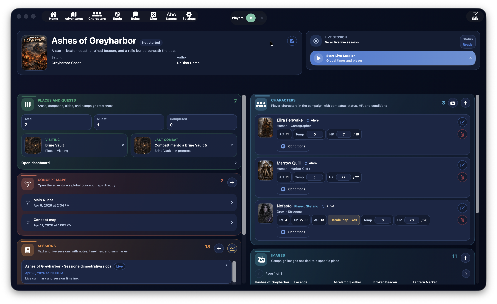
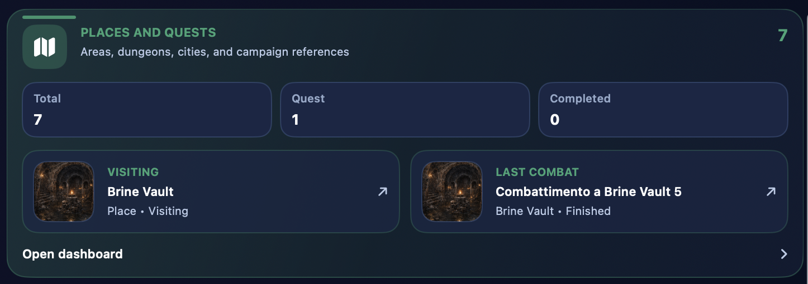
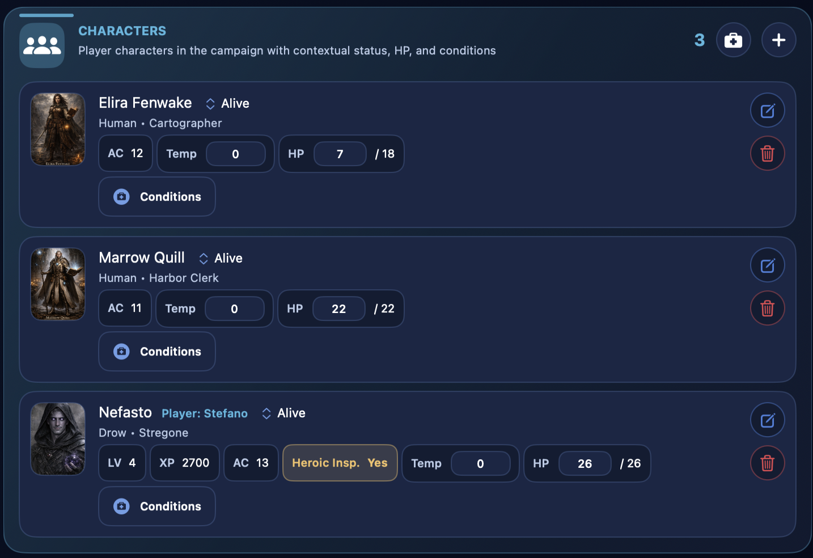
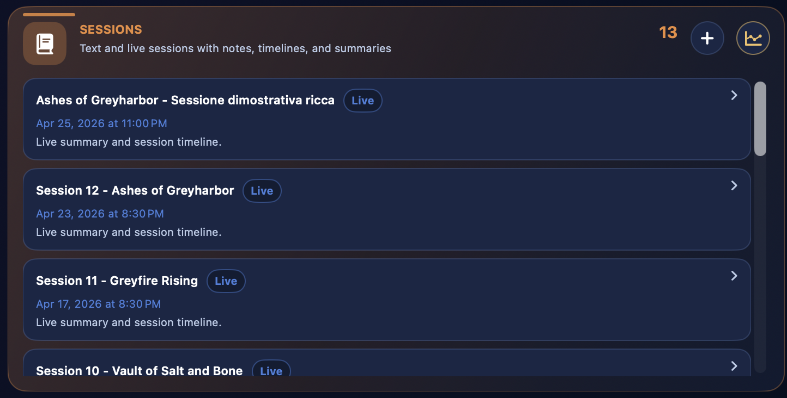
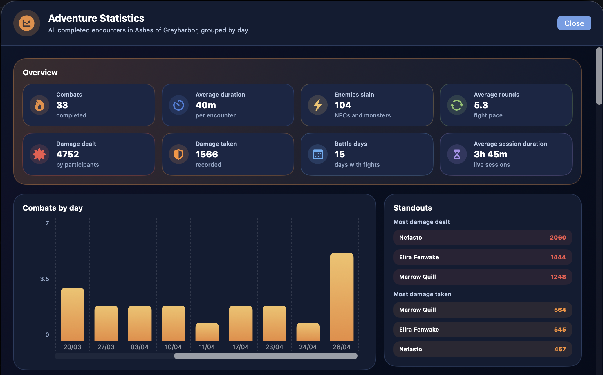
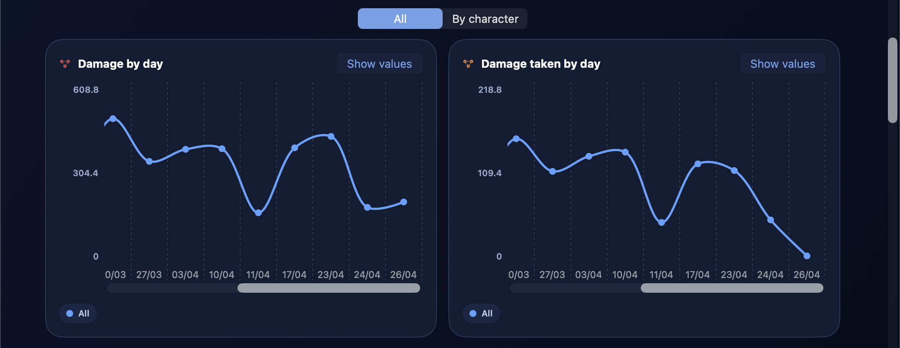
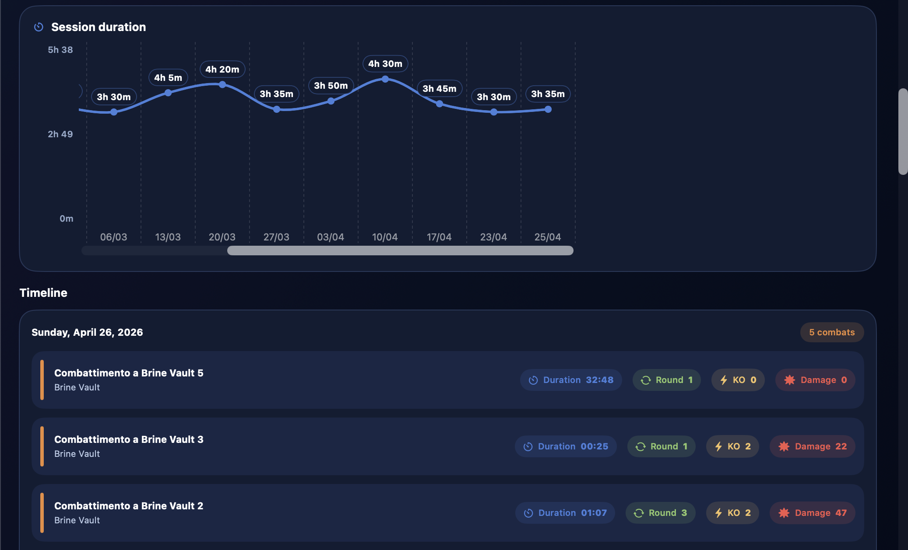
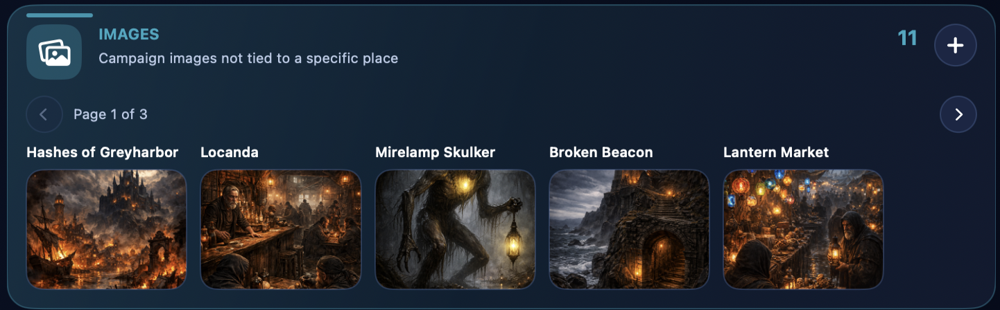
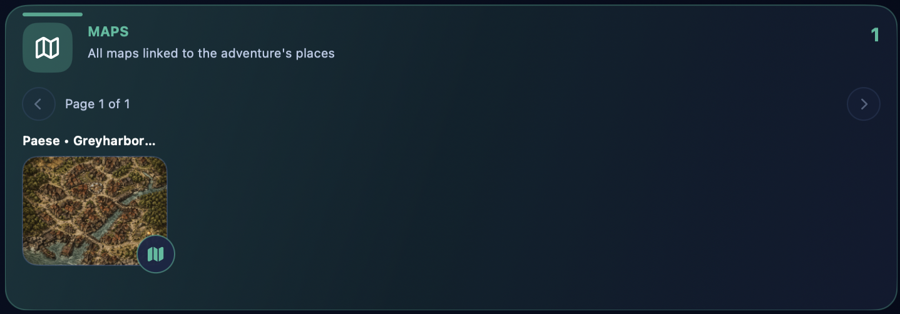
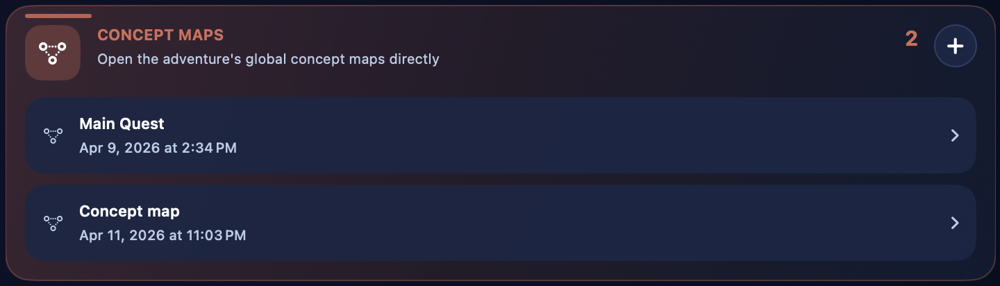

Adventure¶

The Adventure section is the organizational center of a campaign in DnDino. This is where the main structure of your work takes shape: the campaign title, its visual identity, the linked characters, sessions, places, shared images, maps, and quick access to combat.
Tip
Think of the adventure dashboard as the campaign headquarters: it's not the place where you do every detailed task, but the place from which you can quickly reach all the truly operational areas.
This page explains the main flow:
- creating a new adventure
- editing and managing an existing adventure
- how the adventure dashboard works
- how the dashboard relates to the dedicated subpages
More specific areas, such as Places, Concept Maps, Live Session, Characters, Images, and Maps, are explored in their own dedicated pages.
What an Adventure Is For¶
In DnDino, an adventure is the main container for a campaign or narrative arc. It gathers, in one shared context:
- the characters linked to the campaign
- places and quests
- text sessions and live sessions
- shared images
- maps tied to places
- global concept maps
- combats that arise in places linked to the adventure
An adventure is therefore not just a record card: it is the point of entry into the operational side of the campaign.
Where You Create an Adventure¶
Creation starts from the adventure list.
From there you can:
- create a new adventure with the
Newbutton - create the very first adventure from the large central
Create an adventurebutton when the database is still empty - open an existing adventure by clicking its row
- edit an existing adventure
- clone an adventure
- delete an adventure
The list can also be sorted by:
- name
- creation date
- last modified
Note
When you sort by last modified, DnDino doesn't look only at the adventure record itself. It also considers linked activity such as places, sessions, adventure characters, concept maps, and combats.
Creating a New Adventure¶
When you open the creation form, DnDino presents the main campaign information.
The primary fields are:
TitleAuthorSettingShort descriptionStatus
The Status field uses a segmented control and lets you mark the adventure as:
- not started
- in progress
- completed
Extended Description¶
Below the main information you also find a larger Description section.
This area is useful for recording a fuller presentation of the campaign, such as:
- the tone of the adventure
- the narrative context
- initial goals
- general notes for the Dungeon Master
The long description is not lost in the dashboard: if present, it can be reopened later from there as well.
Cover and Adventure Images¶
In the form you can assign a cover image to the adventure. The cover is used as the representative image of the campaign in the main screens.
You can also add images in the Adventure images section. These images:
- stay linked to the adventure
- do not belong to a specific place
- can be shown quickly to players or to the DM from the dashboard
For each image you can manage:
- display name
- visibility for
Players - visibility for
DM
Editing an Existing Adventure¶
When you open an existing adventure for editing, the form is largely the same as the creation form, but it adds an extra section: Adventure reset.
Resetting does not delete the campaign structure. Instead, it clears the current play state. In particular it:
- removes all linked adventure characters
- deletes saved sessions
- returns places and quests to their initial state
- restores NPCs and monsters to full HP and clears their conditions
- resets prepared combats without deleting their structure
This is useful when you want to reuse the framework of a campaign or bring the adventure back to a clean state without rebuilding it from scratch.
Cloning and Deletion¶
From the adventure list you can also:
Clone an Adventure¶
Cloning creates a copy of the campaign through the internal duplication service. It is useful when you want to:
- start from a similar structure
- reuse a base setup
- create a variant of an existing campaign
Delete an Adventure¶
When you delete an adventure, DnDino removes the main record and also starts cleaning up related resources. It also updates global character references so they no longer point to the deleted adventure.
Opening the Adventure Dashboard¶
Clicking an adventure in the list takes you into its dashboard, which is the real operational center of the campaign.
The dashboard is organized as a panel-based screen:
- a top band with the adventure header
- two lower columns with cards for the various campaign areas
The order of the panels can be customized in the app settings.
Dashboard Header¶
The top part of the dashboard gathers the essential information of the adventure:
- cover image
- title
- status
- short description
- setting
- author
If the adventure also has a long description, a dedicated button appears to open it in a popover without leaving the dashboard.
From here you can also enter Edit to return to the adventure form and update the data.
Live Session¶
The Live Session no longer lives in a fixed dashboard panel: it is started and controlled from the center of the top bar while you are inside an adventure page.
The central control is used to:
- start a new live session for the adventure
- see whether a session is running or paused
- monitor elapsed time
- pause the session
- close and save it
When the adventure's live session is active, the control remains available in places and combat too, so you can manage it without returning to the dashboard.
If another adventure already has an active live session, the top bar makes that clear and won't let you start a second one in parallel.
Dashboard Panels¶
Below the header, the dashboard shows the main panels of the adventure.
At the moment, they are:
Places and QuestsCharactersSessionsImagesMapsConcept MapsStatisticsMetadata
Tip
From settings you can change both the order of the panels and which column they appear in on the Adventure Dashboard.
Places and Quests¶

This panel is the entry point to the places dashboard.
From here you can quickly see:
- total number of places
- total number of quests
- number of completed quests
It may also show quick access to:
- the last useful place
- the last useful combat
Opening this card takes you to the section that manages:
- places
- sub-places
- occupants
- place images
- maps
- interactive maps
- combats linked to places
This area is described in more detail in the dedicated Places page.
Characters¶

The Characters panel shows the characters linked to the campaign.
Here you can:
- see already linked adventure characters
- add new ones
- heal them quickly with
Heal all - open their campaign-specific state
This section does not replace the base character sheet. Instead, it shows the campaign-specific layer, with contextual state, hit points, and conditions.
The difference between:
- base character sheet
- adventure character
- place character
- combat participant
is explained in more detail in the dedicated Characters page.
Sessions¶

The Sessions panel gathers:
- text sessions
- live sessions
- notes
- summaries
- timeline entries
From here you can also create a new text session. Sessions therefore serve as both the narrative memory and operational record of the campaign.
This area is explored in more detail in the dedicated Live Session page and in the session workflows.
Adventure Statistics¶



The Statistics panel opens a dedicated window for reading the campaign's progress over time.
This view collects completed combats from the adventure, including combats completed outside a live session, and organizes them chronologically.
The main data can include:
- total number of combats
- average encounter duration
- average session duration
- average turn time for heroes and the DM
- defeated enemies
- adventure characters with the most damage dealt
- adventure characters with the most damage taken
Charts help you read the trend over time:
- damage dealt by combat
- damage taken by combat
- damage dealt by day
- damage taken by day
- session duration grouped by day
- average turn time, grouped by session or by combat
Daily charts can switch between All and By Character. The character view uses one line for each involved adventure character; the legend lets you show or hide individual characters when the chart gets too dense.
Numeric values can be shown or hidden with the dedicated control, so you can choose between readability and detail. Charts can be scrolled horizontally and have independent zoom controls, letting you expand or compress one chart without affecting the others.
Note
The main damage rankings focus on adventure characters. NPCs and monsters still matter in combat, but over a long campaign their weight would be too variable to remain useful.
Images¶

The Images panel gathers the global adventure images, meaning those not tied to a specific place.
From here you can:
- add images
- browse them by pages
- show them quickly to players
- show them quickly to the DM
This is the right area for campaign-wide visual material that doesn't belong to a single place.
Maps¶

The Maps panel shows all maps linked to the places of the adventure.
Maps are not added directly here. They appear in the dashboard once they have already been linked to a place.
From this card you can:
- browse the adventure maps
- show them to players or DM
- open the related interactive map of the place, if present
This part is covered further in the dedicated Maps and Interactive Maps pages.
Concept Maps¶

The Concept Maps panel gathers the adventure's global concept maps.
From here you can:
- see how many concept maps exist
- open them quickly
- create a new one
Concept maps are useful for linking ideas, places, characters, and narrative relationships. They are covered in their own dedicated page.
Metadata¶
If metadata display is enabled in settings, a technical panel also appears showing:
- the adventure ID
- creation date
- last modification date
This section is mainly useful for control, diagnostics, or advanced management.
Relationship with the Subpages¶
The Adventure page is a general overview. From this point onward, the child pages go deeper into each specific operational tool.
The child pages of this guide will be:
- Places and Quests
- Concept Maps
- Adventure Statistics
- Images
- Maps
- Interactive Maps
- Live Session
- Characters
In practice:
- this page explains how an adventure is created and structured and how the Adventure Dashboard is organized
- the child pages explain how each internal section is actually used
When to Use This Section¶
The Adventure section is the right place when you want to:
- create a new campaign
- define the cover, status, and description of the adventure
- resume work on an existing campaign
- enter the main dashboard
- start a live session
- quickly reach the campaign's places, characters, sessions, images, and maps
- review statistics and charts for completed combats
Version 1.4 additions¶
The Adventure Dashboard now includes centralized image management.
From the image manager you can review images linked to the adventure and its places without duplicates, edit their display name, show them to players or the DM, share them through macOS, see where they are used, and enable or disable the Interactive Map and Shadow Map flags.
The Maps panel can also filter maps by all maps, interactive maps, and Shadow Map assets.